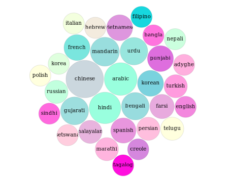

Essay Writing and Teamwork
CSCI1800 Fall 2020
Dr. Aaron Sidney Wright
asw@dal.ca

Agenda
- Survey Results
- Teamwork Strategies
- Essay Writing
- Office Hours / Questions
Use these slides on your own: https://g.aaronswright.com/.
1. Cities of CSCI1800 Students
1. Languages of CSCI1800 Students
2. Teamwork in CSCI1800
- Items graded as a team
- Team Charter
- Team Plan 1, 2, 3, 4
- Items graded individually: Everything else
- Short writing assignments
- Draft and Peer Review Comments
- Final Essays
- Ungraded team things
- Team Notes
- Friendship, community, tips...
2. Teamwork Strategies
- Ask a lot of questions!
- Commit to coordinate
- Give your suggestions in the chat
2. Teamwork Strategies
Tools
- Messenger / chat
- BrightSpace Discussion Board
- Microsoft Teams (video)
- Your suggestions?
3. Essay Writing is a Process
Invention
Organization
Composition
Revision
- Invention: Active reading, take notes, discuss with classmates, idea generation, trial thesis
- Organization: Diagram argument, make concept map, make outlines
- Composition: paragraphs, write into outlines, go back to Invention, go back to Organization, iterate, compose drafts
- Revision: Peer-review, re-read, edit, correct, go back to earlier stages, polish
3. Essay Writing Tools
BSpace > Content > Course Docs
- Team Notes Template
- Cover Essay Template
- Writing Outline
- 750-word Essay Rubric (Syllabus)
In-person / virtual
- Tutorial Problem Solving sessions
- Dr. Wright's Office Hours
- Free Appointment at the Writing Centre
3. Essay Grading
Each Assignment has its own rubric. For evaluating writing, your writing will be evaluated on:
- Argument
- Evidence
- Structure
- Review
- We also check for Academic Integrity, which gets its own video in Unit 0
Agenda
- Survey Results
- Teamwork Strategies
- Essay Writing
- Office Hours / Questions
Use these slides on your own: https://g.aaronswright.com/.
Office Hours
Please ask your questions using the chat.
Thank you for watching!
Dr. Aaron Sidney Wright
CSCI1800 Fall 2020
Use these slides on your own: https://g.aaronswright.com/.